| Guidelines |
作者：Nick Edgar, Kevin Haaland, Jin Li , Kimberley
Peter
译者：Bobbie Wang，Cliff Liang
最新更新: 2004年2月
Eclipse是一个通用的工具平台――一个可以用来做任何事情的开放，可扩展的IDE。它的真正价值来自工具插件，它能够“教”Eclipse怎样和其他东西协同工作－Java文件，Web内容，图片，视频－几乎是你能够想到的任何东西。Eclipse使你能够独立开发出软件工具，能够和其他工具无缝集成，并且你不用知道一个工具在哪里结束而另一个在哪里开始。我们所熟知的工具的最初概念这里则完全消失了。
这个平台非常灵活而且可扩展性强,，但这个灵活性也有一个严重的缺点。特别是程序无法保证平台内的已注册组件的用户界面一致性。本文试图为组件创建定义标准用户界面指南，从而解决这个问题。如果你在自己的工具中采用了这些指南，就可以很好地保证和平台及其他工具的一致性，并且对于你的用户来说更容易理解。
这些指南主要供Eclipse用户界面的设计者和实现者使用。
Workbench是多个窗口的集合。每个窗口包含菜单栏，工具栏，快捷方式栏，以及一个或者多个透视图。
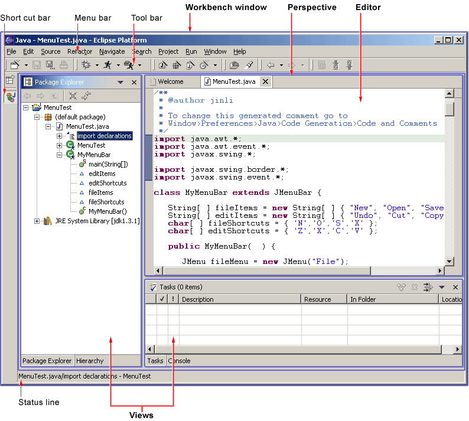
透视图是一个包含一系列视图和内容编辑器的可视容器。视图完全存在于某个透视图中而且不能被共享，而任何打开的内容编辑器可以在透视图间共享。如果两个或者多个prespective打开了同样的视图，他们共享这个视图的同一个实例，虽然在不同透视图之间视图的布局可能不同。对于不同的Workbenck窗口中的透视图，编辑器和视图都不能共享。一个透视图就好像是一本书里面的一页。它存在在一个窗口中，并且和其他透视图一起存在，和书中的一页一样，每次你只能看到一个透视图。
Workbench的主菜单栏通常包括File，Edit，Navigate，Project，Window，Help这些顶层菜单。其他的顶层菜单位于Edit和Project菜单之间，往往是和上下文相关，这个上下文包括当前活动的透视图，最前面的编辑器（不管是否活动）以及活动视图。
在File菜单中，你可以找到一个New子菜单，它包括Project，Folder，File的创建菜单项。File 菜单也包含Import and Export菜单项，用来导入文件到Wrokbench中，以及导出它们。在Edit菜单中，你可以找到象Cut，Copy，Paste，和Delete这些命令。这些命令称为全局命令，作用于活动部件。也就是说，如果当Navigator活动时使用Delete命令, 实际操作是由Navigator完成的。在Project菜单中，你可以找到和项目相关的命令，比如Open Project，Close Project和Rebuild Porject等。在Run菜单中，你可以看到和运行，调试应用代码相关的命令，以及启动象Ant脚本这样的外部工具。在Window菜单中，你可以找到Open Perspective子菜单，根据你开发任务的需要打开不同的透视图。你也能看到透视图 布局管理菜单栏。Show View子菜单用来在当前的Workbench窗口中增加视图。另外，你可以通过首选项菜单项来修改Workbench 的功能首选项配置。
作为plug-in开发者，你可以为平台提供新的视图，编辑器，向导，菜单和工具项。 这些东西都是用XML来定义的，一旦注册后，就可以和平台中已经存在的组件无缝地集成在一起。
对大多数开发者来说，平台的介绍内容实在是太多了。你可能会问：我该从哪里开始呢？这里有一些基本规则可以帮助你。
本文适合UI设计者和开发者。我们讨论的任何应用都会有两个主要的层次：模型层和用户界面层。Eclipse的模型层，也叫做Workspace，包含了很多资源（项目，目录和文件）。 用户界面，也叫做 Workbench，定义了这些资源的表现方式。
作为UI开发者，你同时会有一个模型和一个表现方式。我们假设你希望让模型通过表现层可见，大多数开发者会首先在Workbench中添加一个新的视图或者编辑器。
在Eclipse中，编辑器用来显示基本内容， 例如需要用户交互的文件或者数据对象。在任何情况下，这个内容是基本关注点，而且还是基本任务的体现。为了解释这个概念，让我们看一些常见的例子。
对于Java编程来说，基本任务就是创建，编辑和调试Java代码。基本关注点是Java代码，因此编辑器用来和那些代码交互。 Navigator视图，Outline视图，和Properties视图用来支持这个基本任务，当你写Java代码时，它们很少能引起你的注意。
对于阅读email来说，基本任务是创建，发送，阅读和回复邮件。基本关注点是某个特定的邮件，因此编辑器用来显示或者回复一份邮件。 视图可以用来选择邮件阅读并且打开一个编辑器。
对于使用即时消息通信，基本任务是交谈。基本关注点是一次特定的交谈，因此编辑器用来进行交谈。视图可以用来列出所有你可以开始交谈的人。
对于浏览网页，基本任务是阅读。基本关注点是某个网页，因此编辑器用来浏览网页。
在任何情况下，基本任务决定了基本关注点。作为基本关注点，它应该处于在UI的主要位置（作为编辑器），并且能够给Workbench的主菜单栏和工具栏提供命令。
一个视图可以用来保存你最喜爱的链结，并且可以重新打开他们。在任何时候，你可以编辑你正在看的页面。这将打开一个新的编辑器。 视图用来支持基本任务。你可以用它们来浏览信息的层次，打开编辑器，或者查看活动部件的属性。每个视图可以有它自己的工具栏和菜单栏。
一旦你添加了一个新的视图或者编辑器，一个有趣的问题出现了。这个模型是从哪里来的？在Eclipse中，大部分数据是用创建向导生成的。你可能也想添加一个创建向导。一旦一个对象存在，你可能需要用属性页面，或者属性对话框编辑对象的属性。
所有的这些内容都将在本文的后续部分详细讨论。
希望你已经对Eclipse UI结构和API已经有了基本的了解，并且了解UI设计的基本规则：用户可控，直接，一致，容错，反馈，美观和简洁。 如果你目前还没有这些基本的知识，请先去阅读相关的文档。
 指南1.1
指南1.1
遵循并应用好的界面设计原则：用户可控，直接， 一致，容错，反馈，美观和简洁。
如果你还不知道一个工具应该有怎样的外观和感觉，先看一下平台，然后再看一下Jave 开发工具和 Eclipse的插件开发环境（PDE）。在很多情况下，你所想像的工作流可能已经存在在Eclipse中了。如果是这样，直接采用平台的工作流和用户接口惯例。这样可以更好地保证和平台以及其他插件的一致性，并且你的用户也更容易学习使用。
在有些情况下，可能要忽略Eclipse的工作流而实现“定制”的用户界面。这个界面在整个集成环境中会很突兀，因为其他工具都采用了平台的惯例。这样做会丢失过去经验的很多好处，并且要强迫你的用户来学习新的概念。
请查询最佳实现章节获得更多的例子和信息。
也请访问Eclipse platform 新闻组 和社区共享信息。
 指南 1.2
指南 1.2
遵循平台的用户界面惯例。
如果你决定使用Eclipse的一些设计惯例，注意不要盗用Eclipse特有的UI惯例。例如，Workbench窗口的活动部分用带阴影的标题表示。编辑器中带阴影标题的使用（见下图）可以是显示那个部分中焦点位置的一种方式，这样就会和窗口的活动部分引起混淆。
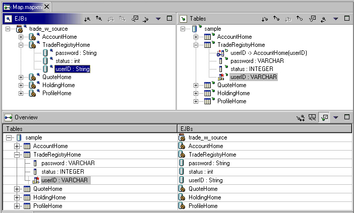
 指南 1.3
指南 1.3
注意不要混用UI 隐喻。 这样会引起原始概念和你的应用相混淆。
访问http://www.eclipse.org/ 加入Eclipse UI邮件列表platform-ui-dev。
 指南 1.4
指南 1.4
如果你有好的想法，和Eclipse社区一起工作，把Eclipse变成更好的平台。
对于所有的check box，radio button，以及group的文本，必须采用句子形式的大写。例如，“Choose an option for the Java file” 可以用作一个group的文本。
 指南1.5
指南1.5
在菜单，工具提示（ToolTip）以及所有的窗口，对话框，标签（Tab），表格的列标题（Column Heading）和按钮（Push Button）的标题中，都应该使用标题形式的大写。除了第一个和最后一个单词的首字母大写，所有名词，代名词，形容词，动词和副词也要首字母大写。不要包含结束标点。
对于对话框或窗口中的控件标签，包括check box，radio button，group label，和simple text fields，均采用句子形式的大写。把第一个单词的首字母大写，以及其他象Java这样的词也要首字目大写。
参考最佳实现 章节查看例子和更多信息。
 指南1.7
指南1.7
在你的plug-in中创建资源的本地化版本。
请参考向导部分查看如何在向导中处理用户输入错误。
请参考编辑器部分查看如何在编辑器中处理错误的指南。
如果出现一个错误需要用户的明确输入或者立刻注意，就需要使用模态对话框把错误报告给用户。这样能够迫使用户注意并且立刻处理问题。
 指南 1.8
指南 1.8
如果出现一个错误需要用户的明确输入或者立刻注意，使用模态对话框。
Plug-in必须在错误对话框的详细内容区域中提供以下信息：
如果产品中出现编程错误，使用模态对话框，并且log出错信息。
所有为Eclipse创建的可视化用户界面元素都遵循一个公共风格，称做Eclipse可视风格或者Eclipse风格。在下面的指南中，你可以找到基本的设计信息，以及在基于Eclipse框架的工具中，实现Eclipse风格图标和向导图片的规范。
遵循这些指南可以保证可视用户界面元素以及它们在Eclipse工具和plug-in中实现的一致性。这些元素的一致性包括：可视元素的语意，风格以及实现上的考虑。下面的部分将讨论这些话题。
在Eclipse风格图标的发展中，形成了一种用来描述用户界面中不同概念的可视化语言。这些概念现在通过一大批小的可视符号表现出来， 通过使用Eclipse工具你会知道有很多这样的可视符号。
为了保证用户获得一致的视觉体验，通过工具理解这些概念，并且避免混淆， 我们建议你尽可能重用Ecplise风格图形元素。
在Eclipse可视风格中已经创建了很多图标，因此你很可能在里面找到你需要的图标或图形元素。下表就是一个例子。每个元素有自己特定的含义，因此使用时要注意让它们保持原有的含义。

 指南 2.1
指南 2.1
重用核心可视化概念来保持它们在Eclipse plug-in中表现方式和含义的一致性。
创建Eclipse风格图标时可以采用多种调色板。有3种不同的调色板用来创建3种不同的图标状态，如下：
Eclipse风格图标必须用一个特殊的256色调色板来设计，该调色板包括20个标准色和236个用户自定义颜色，如下。

注意：虽然显示的调色板是基于来自Adobe Photoshop的标准windows .aco调色板，但是，这两种调色板是不同的，而且只有显示的调色板才能用于Eclipse风格图标的创建。
 指南 2.2
指南 2.2
使用Eclipse 256色调色板来创建所有类型图标的活动或选中状态。
为了创建你全彩色图标的灰度可用状态的版本，你会需要用到下面的8 色调色板：

 指南 2.3
指南 2.3
使用Eclipse 8 色调色板来创建透视图，视图，工具栏，工具栏向导和局部工具栏图标的可用状态。
To create grayscale, disabled versions of your full color and enabled icons,
you will need to use a subset of the 8 color palette, that consists of the 2
colors shown below:
为了创建你的全彩色图标的灰度的不可用状态版本，你可以用8 色调色板的一个子集，其中包括以下两种颜色：

 指南 2.4
指南 2.4
使用Eclipse 2 色调色板创建工具条，工具条向导和局部工具条图标的不可用状态。
Eclipse风格图标都被划分成不同的类别，这样可以根据它们在用户界面中的不同位置进行优化。下面就显示了不同的图标分类和它们所处的位置。（译：在下面图标类型的章节中，图标类型只作部分翻译（如：View Icon就翻译成View图标），以保证文字和下图的对应一致。）
A Product
Prodcut图标表示产品的标识，通常处于窗口标题栏的最左边，在透视图，文档和产品名称的前面。
B Perspective 和
Fastview
Perspective和Fastview图标在workbench的左下方。这些图标让用户可以快速地在不同的透视图之间切换，或者调用被作为Fastview创建的视图。
C Toolbar
Toolbar图标在workbench顶部的主工具条中。
这些图标都可以调用命令，包括全局命令和编辑器内的命令。
D Toolbar Wizard
Toolbar Wizard图标可以在workbench顶部的主工具条中找到。
这些图标带有棍子和火花图形，很容易看到。选中这些图标的一个会启动一个向导。
E View
View图标位于workbench中每个视图标题栏的左边。
这些图标表示了每个视图的功能。
F Local (View) Toolbar
Local (View) Toolbar图标位于workbench中每个视图标题栏中View图标的右边。
这些图标会调用那个视图中的命令。局部工具条图标也可以出现在所有的菜单，包括主菜单，下拉菜单和上下文菜单中。
G Model Object
Model Object图标可以在workbench中的tree视图，list视图和编辑器标签（Editor Tab）中找到 （例如文件，文件夹，项目等等）。
H Object Overlay
Object Overlay图标也位于tree视图或者list视图中。它们附在模型对象图标的角上，用来表示某些变化。
 指南 2.5
指南 2.5
在用户界面中适当的位置使用适当的图标。
除了少数例外，Eclipse风格图标一般设计在 16×16 像素组成的区域内。在该区域内，15×15像素的空间是给图像本身用的，剩下一行和一列空像素，可以让你把图像放在界面中合适的位置。注意看一下下图例子中空像素的位置。 图标按照特定位置进行裁减以保证在用户界面中可以排列整齐。
下面的图显示了不同类型图标的正确尺寸，以及他们在所分配的屏幕空间中合适的摆放位置。
|
View 图标 | |
| 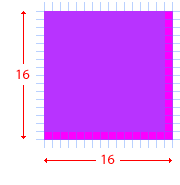 |
Perspective 图标 最大16×16像素，总是居中。 |
 |
Toolbar 图标 最大16×16像素，总是居中。 |
|
Model Object 图标 | |
| 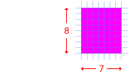 |
Object Overlay 图标 |
 指南 2.6
指南 2.6
对于每个类型的图标遵循其特定的尺寸规范。
 指南 2.7
指南 2.7
按照图示的特定位置裁减图标以保证其在用户界面中排列整齐。
为了遵循不同类型图标在其所分配的屏幕空间中特定的尺寸和摆放位置，下面的定位指南可以让这些元素相对于其他元素排列整齐，并创建出一个组织很好的，美观的用户界面。（所有的度量单位为像素。）

（包括Toolbar图标和Toolbar Wizard图标）
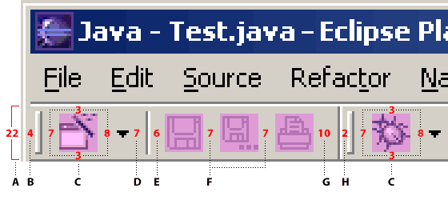
项目 |
《
定位和间隔 |
A | 工具条 | 22 像素高 |
| B | 左边缘和柄（handle）之间 | 4 像素 | |
| C | 柄和第一个图标之间 | 7 像素 | |
| C | 图标和工具条顶部之间 | 3 像素 | |
| C | 图标和工具条底部之间 | 3 像素 | |
| C | 图标和下拉（twisty）之间 | 7 像素 | |
| D | 下拉和分隔（hard rule）之间 | 7 像素 | |
| E | 分隔和图标之间 | 6 像素 | |
| F | 图标之间 | 7 像素 | |
| G | 图标和分隔之间 | 10 像素 | |
| H | 分隔和柄之间 | 2 像素 |
（包括View图标和Local Toolbar图标）

项目 |
定位和间隔 | ||
| A | Title Bar | 22 像素高 | |
| B | 左边缘和View图标之间 | 4 像素 | |
| B | View图标和文字标签之间 | 3 像素 | |
| B | Title Bar图标和Title Bar顶部之间 | 3 像素 | |
| B | Title Bar图标和Title Bar底部之间 | 3 像素 | |
| C | Local Toolbar 图标之间 | 7 像素 | |
| D | 最后一个Local Toolbar图标和关闭窗口'x' 之间 | 7 像素 | |
| E | 关闭窗口 'x' 和右边缘之间 | 4 像素 |
（包括Perspective和Fastview图标）
 |
Perspective 图标
Fastview图标
|
（Model Object图标）
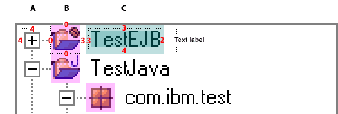| 项目 | 定位和间隔 | ||
| A | “+/-”widget 和窗口左边之间 | 4 像素 | |
| A | “+/-”widget 窗口顶部之间 | 4 像素 | |
| B | 窗口顶部和第一个图标之间 | 0 像素 | |
| B | 图标间的垂直间隔 | 0 像素 | |
| B | 水平Treeview分支和图标之间 | 0 像素 | |
| B | 图标和文本标签之间 | 3 像素 | |
| C | 文本被嵌在文本标签内 | 左边和顶部留3像素，右边2像素，底部4 像素（长度可变） |
正如我们在图标尺寸和摆放位置中所说的，所有的掩模必须是同一个尺寸：7×8 像素。为了把它们从底下的模型对象图标中分开，必须在项目类型掩模和Jave掩模中加上另外的白色边线。边线的位置随着掩模在底下的图标中的放置位置而变化。
项目类型掩模项目类型掩模在Navigator和Package视图中显示。它们完全堆叠于模型对象16×16图标空间的右上角位置。
有一些项目类型掩模在创建时需要考虑避免界面中的拥挤。项目类型掩模用来显示那些出现在Navigator及其类似视图中的项目的不同类型。
图像周围的白色外边线可以让图像更容易看清。
 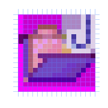
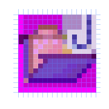
辅助掩模用于各种类型的Tree视图。这种类型的掩模完全堆叠于模型对象 16×16 图标空间的左下角位置。

辅助掩模可以很快地显示对象的状态。辅助掩模的例子有warning，error，failure，和success。
Java 掩模
Java掩模用于 Outline，Hierarchy和Package视图。Java掩模附在模型对象图标上，因此扩大了16×16图标空间。它们位于模型对象图标的右边， 和16×16模型对象空间重叠了3个像素。 一个模型对象上最多可以放3个Java掩模。
掩模显示的顺序取决于它们被分配的顺序。设计Java掩模时，重要的是要确认基础的对象图标能够支持附加的掩模而不会引起误读。注意有两个Java掩模通常会在下图中模型对象的右下角‘C’位置显示： synchronized （方法）和
synchronized （方法）和  run （类）。
run （类）。
 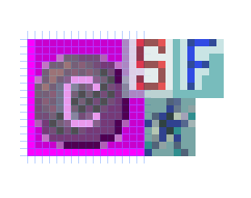
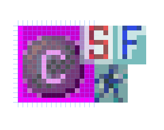
Java 掩模定义了一个对象的attributes。 例子有static，final，abstract，和synchronized。
注意：在Hierarchy和Outline 视图中，Java掩模附在模型对象的右边，如图所示。但是在Package视图中， 它们堆叠在模型对象上面。
版本控制掩模
版本控制掩模用于Navigator视图以及CVS中的Merge编辑器的Structure视图中显示。当它们在Navigator视图中显示时，该掩模完全堆叠在模型对象的16×16图标空间的右边。

当版本控制掩模在CVS中 的Merge编辑器的Structure视图中显示时，它们附在模型对象上面，因此扩展了16×16的空间。 它们位于模型对象图标的右边，和16×16的模型对象图标重叠3个像素。在CVS中一个对象的右边最多可以有2个掩模。
 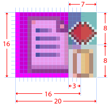
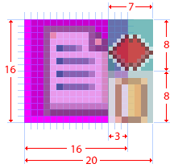
 指南 2.8
指南 2.8
遵循不同类型图标的定位指南来优化这些元素相对其他元素的排列位置。
向导调色板提供你在创建向导图形时需要的特殊的蓝色 183 色调色板。
Eclipse风格向导横幅图形必须用特殊的蓝色183色调色板创建，如下所示。

 指南 2.9
指南 2.9
用Eclipse的特殊蓝色183色调色板创建向导图形。
这部分讨论关于创建向导标题（banner）图形的尺寸指南。
所有的向导标题图形必须设计成可以放在一个向导的右上角的75像素宽×58像素高的屏幕空间内。
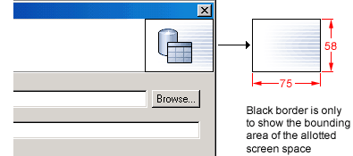
在向导标题的空间分配中，并没有严格的规则规定把向导标题图形放在哪里。 一般来说，图形垂直居中，水平位置偏左。
 指南 2.10
指南 2.10
遵循特定的尺寸规范来设计向导图形。
 指南 2.11
指南 2.11
根据显示的特定摆放位置裁剪向导图形，以确保其在向导标题区域排列整齐。
Eclipse提供了一套目录名称和结构用来存储和访问任何plug-in中的用户界面图形。 本节描述了Eclipse中使用的命名惯例和目录路径。如果遵循这些惯例，你可以不做任何修改直接，在plug-in结构中使用预定义的目录名称和路径来放置图标和向导图形文件。
从你要求图标设计到它们的最后递交，命名和结构都是一样的。如果改变了用户界面目录名字或者多个目录来保存图片，请告知你的视觉设计者这些变化，以便他们也在同样的结构下工作。 另外，使用尽可能少的目录来保存你的图片，这样能很大程度地减少不必要的图片复制并简化资源管理。
一旦你的图标被概念化，设计，批准并且剪切，它们可以使用下面描述的命名惯例和结构进行存储。
下图显示了一个plug-in完整的目录结构。

注意：
 指南 2.12
指南 2.12
使用预定义的目录结构和命名惯例。
 指南 2.13
指南 2.13
保留原始的目录名字。
 指南 2.14
指南 2.14
在plug-in中把所有的图形保存在一个或尽量少的一级用户界面目录中以减少图形的复制。
 指南 2.15
指南 2.15
使用提供的活动，可用和不可用状态。
在设计图标前先确定文件名可以帮助保证名字正确表达它们所代表的概念，并避免错误地使用图标和文件名重复。 如果你提前考虑好文件名，就能够很快地区分不同的图标类型，更容易地理解这些图标的意思， 尤其当你的图形资源大量增加时。
文件名后缀能让你区分不同类型的用户界面元素间的差别。 它们可以用来表示图标或者向导图形的位置或者功能。下表列出了在Eclipse中图形文件名使用的不同后缀：
| 文件名后缀 | 在有下列功能或者位于以下位置的图标中使用： | 图标类型和位置 |
| *_wiz.gif | 调用一个向导，或者是向导中的图形 | 向导标题图形：在向导对话框窗口中使用。 Wizard图标：在向导工具条中使用。 |
| *_exec | 调用可执行文件 | Toolbar图标：在级联菜单和全局工具条中使用。 |
| *_edit | 在编辑器视图中 | Toolbar图标：在级联菜单和全局工具条中使用。 |
| *_nav | 在Navigator视图中 | Toolbar图标：在级联菜单和全局工具条中使用。 Local Toolbar图标：在视图标题区域的最右边。 View图标和Perspective图标：在视图的左上角。 |
| *_misc | 不适合归入任何其他类别的 | Toolbar图标：在级联菜单和全局工具条中使用。 View图标和Perspective图标：在视图的左上角。 |
| *_tsk | 表示用户可以做的任务 | Local Toolbar图标：在视图标题区域的最右边 Overlay图标： 在模型对象图标的上面，用来表示条件的改变。 Model Object图标：在Tree视图，List视图和Properties视图中使用。 View图标和Perspective图标：位于视图的左上角。 |
| *_mode | 切换视图的工作模式 | Local Toolbar图标：在视图标题区域的最右边。 |
| *_menu | 菜单中 | Local Toolbar图标：在视图标题区域的最右边。 |
| *_ps | 属性页中 | Local Toolbar图标：在视图标题区域的最右边。
View图标和Perspective图标，在视图的左上角。 |
| *_obj | 表示模型对象 | Model Object图标：在Tree视图，List视图和Properties视图中使用。 |
| *_pal | 对象调色板的模型对象图标 | Model Object图标：在对象调色板中使用 |
| *_co | 系统命令，例如，build命令 | Toolbar图标：在级联菜单和全局工具条中使用。
Local Toolbar图标：在视图标题区域的最右边。 |
 指南 2.16
指南 2.16
采用缩写文件名，不要使用图标名称的全名。 例如，New Interface 变成 “newint” 。
 指南 2.17
指南 2.17
在文件名中使用小写字母。 例如，DTD 写成 “dtd”。
 指南 2.18
指南 2.18
在文件名中尽可能使用少于10个字母。 （下划线也作为一个字母计算）
 指南 2.19
指南 2.19
使用文件名后缀来描述它在工具中的位置和功能。例如newint_wiz。
 指南 2.20
指南 2.20
对于所有的用户界面图标和向导图形，使用透明背景的 *.gif 格式，除非应用环境要求不同的文件格式。
 指南 2.21
指南 2.21
保留提供的原始文件名。
作为plug-in开发者，你可以在窗口菜单条和工具条中，或者单独的视图和编辑器中添加自定义的命令。 在窗口中可以添加一个action set，action set是一系列用户可以显示或者隐藏的针对任务的命令。在视图或编辑器中只能添加单个的命令。
下面演示了添加自定义命令的主要区域。

在本节中，我们来看一下通用的命令指南。对于针对窗口，视图，编辑器的相关指南，请参见窗口，视图，和编辑器.
每个命令必须有标签，工具提示和图像。如果命令在工具条中出现，命令图像会显示在所有平台中。如果命令出现在菜单中，图像只能在某些平台下显示，例如Windows 2000 。 标签和工具提示必须使用标题大写风格，就如我们在通用用户界面指南中定义的那样。
每个命令必须提供一个全彩色图像。该图像会在鼠标移到命令上时显示。它也可以在普通命令使用中作为可用，不可用和按下 状态图像。在代码中添加的命令也有选项可以定义可用，不可用和反转（roll over）的图像。 该选项可以更好地控制图像外观。
下面显示了工具条（译：工具提示）中标题大写形式的使用。

 指南
3.1
指南
3.1
每个命令必须有标签，工具提示和全彩色图像。标签和工具提示 必须使用标题大写风格。
命令的tooltip必须描述命令被调用时的行为，并且当前状态无关。对于按钮，标签必须描述用户按下该按钮时的结果。对于图钉按钮（Toogle Bbutton），要描述当其被钉住时的效果，而且，标签不应该随着按钮的状态变化。 在Eclipse 2.1 版本中，建议命令的工具提示使用和命令标签一样的文字。 例如，在下面的截图中，可以看到 Show Type Hierarchy按钮的行为使用工具提示来显示。

 指南 3.2
指南 3.2
命令的工具提示必须描述命令的结果，而不是其当前状态。 使用和命令标签同样的文字。
为了保持一致，在workbench中行为相似的命令都必须采用同样的术语。
在创建资源时，在命令或向导中必须使用 “New” 这个词。例如"New File"，"New Project" 和 "New Java Class"。 在删除存在的资源时必须使用 "Delete"这个词。
在资源中创建对象时，（例如，在XML文件中的tag； Java类中的方法或者field），必须使用”Add“这个词。
用户在现有的资源中添加东西。
 指南 3.3
指南 3.3
对于New，Delete和Add 命令，采用workbench的标签术语。
 指南 3.4
指南 3.4
命令只有在能够成功执行的时候才能够被设置为可用。
命令是否能被设置为可用应该能很快决定；如果决定起来太费事的话，就先乐观地把该命令设置为可用。 在commmand被调用时，必须计算是否能真正可用，如果不能，要给用户显示一个对话框。
 指南 3.5
指南 3.5
命令是否可用必须能快速决定。若不能，就先乐观地把命令设置为可用。万一命令被调用而不能成功执行，就给用户显示合适的消息。
 指南 4.1
指南 4.1
对话框打开时，把初始焦点设在容器的第一个输入控件上。如果没有输入控件，就把初始焦点设在缺省按钮上。
Slush Buckets必须有下列控制按钮，按照下面的顺序，用来把对象从源对象框移动到被选择框内。
| 按钮 | 功能 |
| > | 把左边所有选择的添加到右边 |
| < | 从右边删除选择的项目 |
| >> | 添加所有的项目（无论是否被选择） |
| << | 删除所有项目 |
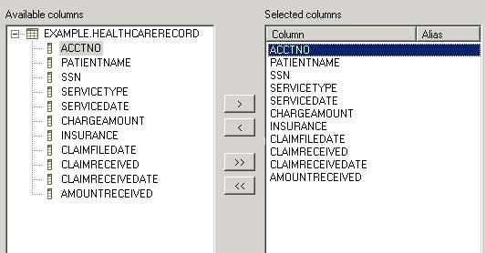
 指南 4.2
指南 4.2
Slush Bucket widget（或者叫做Twin Box）必须是从左边选择到右边，供选择的源对象位于左边。它必须按照顺序有>， <， >>， << 控制按钮。
 指南 5.1
指南 5.1
对于包含很多步骤并且需要按照特定顺序完成的任务，使用向导。
在每个向导的底部，必须有 Back，Next，Finish 和Cancel按钮。

 指南 5.2
指南 5.2
每个向导顶部必须有一个标题图形和 一个用于用户反馈的文本区域，底部必须包含Back， Next， Finish和 Cancel按钮。
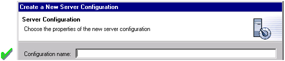
这样显示错误信息是不合适的。在此时，用户还没有做任何操作。
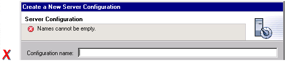
 指南 5.3
指南 5.3
向导开始时使用提示，而不是错误信息。
向导的初始状态必须从它打开时的上下文得到。 例如，在New File向导中，会检查当前选择的Workbench。 如果指向一个有效的项目或者文件夹，向导会自动输入父项目或者文件夹名字，并且把光标焦点移到下一个需要用户输入的位置。如果用户选择没有指向有效的父项目或者文件夹，向导就不会自动输入文件夹名字。它会保留该 区域空白并且把光标焦点放到该区域。当用户选择了一个文件时，向导会用文件的父文件夹或者项目来进行上述操作。

 指南 5.4
指南 5.4
在向导中用当前workbench的状态填充相关区域。
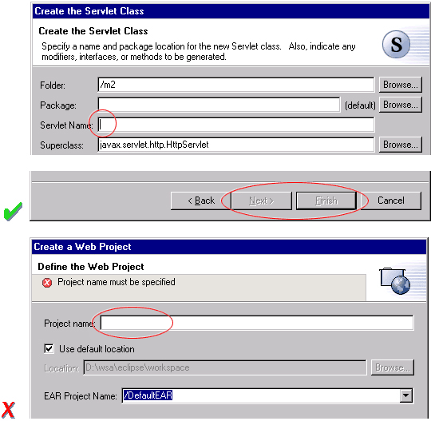
只有在用户输入无效时才显示错误信息。
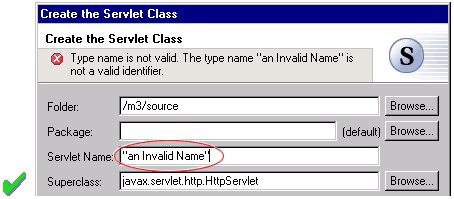
 指南 5.5
指南 5.5
按照Tab顺序对向导数据进行验证。在信息缺少时给出提示，信息无效时显示错误信息。
只有在对话框中所有需要的信息都完备并有效时，才设置Next 或Finish按钮的状态为可用。
向导中的错误信息应该是针对最终用户而不是开发者的。记住这一点，在向导的标题区域中永远不要显示message ID。
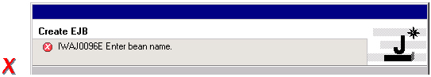
 指南 5.7
指南 5.7
在向导文本中删除所有的编程用的message ID。
例如，在New Java Class向导中，在“Super Class” 文本编辑框边有一个“Browse...”按钮。如果按下Browse按钮，会出现一个Browse对话框，用户可以选择一个超类。在任何新对象和旧对象建立链结时，都应该使用这种模式。 “Browse...”按钮应该放在文本编辑框的右边。
 指南 5.8
指南 5.8
在向导中需要引用已经存在的对象时，使用Browse按钮。
在Browse对话框中，不应该出现无效的选项。对话框关闭时，焦点回到父控件上，并且刷新对话框内控件的状态（可用或不可用）。特别是要新Next，Finish和OK按钮的状态。
下面的截图给出了一个有效和无效过滤的例子。

每个例子项目都会有一个readme.html文件，并且在项目创建时自动打开该文件。这样用户可以立刻看到这个例子的概况：它能干些什么，先决条件，限制，步骤等等。
 指南 5.9
指南 5.9
创建新的文件时，在编辑器中打开该文件。 如果创建一组文件， 在编辑器中打开最重要或者最核心的文件。创建例子项目时，打开readme.html文件。
如果创建了一个新的项目，向导必须把workbench中活动的透视图改变成适合新的项目类型的透视图。在Eclipse 2.1 中，创建新项目时，会提示用户确认切换到所希望的透视图。为了避免丢失上下文，plug-in应该使用这种方式，而不是不提示就自动切换。如果将来用户希望自动切换，可以在确认对话框中选择 “Do not show this message again“ 。
 指南 5.10
指南 5.10
如果创建一个新项目，提示用户改变活动的透视图以适应该项目类型。
不管是创建一个文件，文件夹或者项目，向导都应该在适当的视图中选择并显示新对象。这样用户就可以有直观的印象：新对象已经创建并存在了。
 指南 5.11
指南 5.11
创建新对象时，在适当的视图中选择并显示新对象。
在很多情况下，资源的创建会涉及到包含该资源的项目或者文件夹的创建。如果这个项目或文件夹可以在该向导内创建（使用一些很合理的缺省值），向导应该允许其创建。如果这样的资源的创建需要详细的用户交互来保证父项目或者文件夹得以正确创建，向导就不应该尝试这么做了。向导应该显示错误信息提示用户”指定的项目不存在“。
IBM的WebSphere Studio中的EAR Import 向导就是一个例子，它可以允许用户指定父项目的名字，这样有助于用户交互。这种情况下，基于用户提供的名字，向导可以在创建EAR项目本身的同时也创建可能需要的Web 项目。
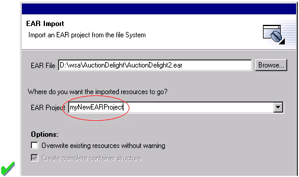
 指南 5.12
指南 5.12
如果可以定义合理的缺省值的话，就允许在向导中创建文件夹对象。
 指南 5.13
指南 5.13
在项目必须是一个项目时，对于文本编辑框标签使用“Project name”。否则，就使用 “Folder name”。不要对这个词作任何修饰。
 指南 6.1
指南 6.1
使用编辑器来编辑或者浏览文件，文档或其他的基本内容。
在编辑器中做的改动必须遵循，打开－保存－关闭，这样的周期模式。当编辑器第一次打开时，编辑器的内容必须是未被修改过的（干净的）。如果内容改变了，编辑器就应该把变化通知平台。作为响应，编辑器Tab标签上就会出现一个星号 “*”。 所做的改动会暂存在编辑器中，直到用户显式保存。此时，改动必须被保存在存储模型的地方。
 指南 6.2
指南 6.2
在编辑器中所做的改动必须遵循，打开－保存－关闭，这样的周期模式。
编辑器必须是以文档或输入为中心。每个编辑器有一个输入，而且在一个页面内对于每个输入只能有一个编辑器。这样的设计可以简化部件管理。
 指南 6.3
指南 6.3
在一个透视图内，对于每个输入，只能存在编辑器的一个实例。
另外，应该允许对于每个不同的输入打开不同的编辑器的实例。
 指南 6.4
指南 6.4
应该允许对于每个不同的输入打开不同的编辑器的实例。

 指南 6.5
指南 6.5
编辑器的标签上应该是正在编辑的文件，文档或者输入的名字。
Tab的标签应该尽量用一个词，最多两个词。
 指南 6.6
指南 6.6
在多页编辑器中，使用Tab控件处理页面激活。Tab标签应该尽量用一个词，最多两个词。
 指南 6.7
指南 6.7
编辑器中所有可用的命令，除了一些显而易见的命令以外，都应该添加到窗口菜单条中。
推荐使用以下的格式，以可以保证在Eclipse中的一致性，并且更容易使用。
| Edit | （一个或多个编辑器专用的菜单） | Window |
| 在这里添加任何对象相关的命令 | （属于专用菜单的命令） | 控制你在编辑器中看到的东西的动作。 |
 指南 6.8
指南 6.8
窗口菜单条中编辑器添加的自定义菜单项应该使用标准格式。
全局命令的完整列表在IWorkbenchActionConstants.java 中申明。（如下）
/**
* From
IWorkbenchActionConstants.
* Standard global
commands in a workbench window.
*/
public static final String []
GLOBAL_ACTIONS = {
UNDO,
REDO,
CUT,
COPY,
PASTE,
PRINT,
DELETE,
FIND,
SELECT_ALL,
BOOKMARK
};
 指南 6.9
指南 6.9
如果编辑器支持Cut，Copy，Paste或任何其他全局命令，这些命令应该也能够通过窗口菜单条和工具条中的命令来执行。
 指南 6.10
指南 6.10
在编辑器的工具条中添加视图菜单中最常用的命令。
编辑器中局部工具条的使用正好和workbench的设计相反。在workbench中，某个编辑器的工具条可以和同类型的编辑器共享。这样减少了你在编辑器间切换时的闪动，减少了产品中图像和命令的数量，也就体现了更好的集成度。
在文本编辑器中，你可以假设只存在一种选择内容：文本。在这种情况下，在编辑器中任何的选择内容都应该使用同样的上下文菜单。
 指南 6.11
指南 6.11
上下文菜单中使用和选择内容相关的命令。
为了保持和Eclipse中其他编辑器的一致性，每个编辑器都应该在上下文菜单中采用通用的命令顺序。下面的表格显示了这种格式。在表中，每项表示一类命令。上下文菜单中的不同类别可以通过分隔线分隔。
| Undo / Redo |
| Add |
| Show In |
| Cut Copy Paste |
| Delete |
| Other Plugin Additions |
| Save |
 指南 6.12
指南 6.12
在编辑器上下文菜单中使用标准的格式。
为了方便浏览，在上下文菜单中对于每个选择类型使用固定的一套命令。一旦定义了内容，就可以根据被选择的对象状态来决定每个命令是否可用。这样做可以增强一致性，使菜单更加合理易用。
 指南 6.13
指南 6.13
在上下文菜单中对于每个选择类型使用固定的一套命令。并且根据被选择对象的状态来决定菜单项是否可用。
平台UI的基本目标之一就是可扩展性。事实上，正是可扩展性使得你可以在平台中自由地增加新的视图，编辑器，透视图和动作。当然，可扩展性也有其两面性。你希望能够扩展平台，而其他人可能希望扩展你的视图或者编辑器。在一个plug-in中增加动作到另一个plug-in的编辑器的菜单，工具条或者上下文菜单是很常见的。
在平台中，编辑器的菜单和工具条会被平台自动扩展。相反，上下文菜单的扩展要通过编辑器和平台的合作才能完成。为了实现这种合作，编辑器要把它所包含的每个上下文菜单在平台中进行注册。它还必须为编辑器中的每个对象类型 定义一个命令过滤器。有了命令过滤器，就可以很容易地在一个plug-in中添加命令到另一个plug-in中定义的编辑器中的对象相关的上下文菜单上。这是通过对象的类型和属性来描述的。要获得更多关于如何实现该概念的信息，请参考Creating an Eclipse View 。
 指南 6.14
指南 6.14
在平台中注册编辑器中所有的上下文菜单。
为编辑器中的每个对象类型实现一个命令过滤器。
如果从上次资源被保存以来，编辑器没有包含任何改动，编辑器就应该立刻关闭。
 指南 6.16
指南 6.16
如果一个编辑器的输入内容被删除了，并且编辑器没有包含任何改动，编辑器应该立刻关闭。
I如果从上次资源被保存以来，编辑器中有改动（也就是说，是“dirty”），编辑器必须提示用户把改动保存到其他位置，然后再关闭。下面的例子显示了应该提供的对话框：
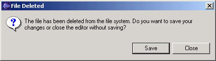
 指南 6.17
指南 6.17
如果编辑器的输入内容被删除，并且编辑器有改动，编辑器应该提示用户把改动保存到其他位置，然后再关闭。

 指南 6.18
指南 6.18
如果资源有改动，要在编辑器Tab中资源名称前面加一个星号。
视图主要是用来浏览信息的层次，打开编辑器，或者显示活动编辑器的属性的。编辑器主要是用来编辑或者浏览一个文件，文档或者其他输入对象的。这样的陈述不管文件是否是只读文件都是正确的。在任一种情况下，用户都可以选择文件，打开它，并且在编辑器中浏览其内容。如果文件是只读的，就应该禁用“File > Save”命令而使 “File > Save As” 命令可用。在状态条区域，应该显示 “Read-only" 而不是缺省的 ”Writeable“。
 指南 6.19
指南 6.19
对于只读的编辑器输入和其他输入同样处理。如果可能的话，使 ”Save As“处于可用状态。在状态条区域显示”Read-only“。
例如，如果你在编辑器中打开了一个 .java文件，Outline视图中就会显示类的结构。当你在Outline中选中一个方法或者成员变量时，它的文本声明会在编辑器中被选中并且显示。如果你选中一个方法或者成员变量， 并且打开上下文菜单时，你就能够把它作为一个概念单元来交互，而不是单纯的文本。
总之，如果编辑器中数据太多无法在一屏上显示时，编辑器就必须给Outline视图提供一个Outline 模型， 并且生成一个结构化的Outline。该结构化的Outline可以让你很容易地浏览Java文件或者html文件这样的对象。
 指南 6.20
指南 6.20
如果编辑器中数据太多无法在一屏上显示时，并且将生成一个结构化的Outline， 编辑器就必须给Outline视图提供一个Outline 模型。
当编辑器和Outline视图交互时，关于位置的通知必须是双向的。也就是说，用户在Outline中选择东西时，编辑器中的选择位置也会更新；用户在编辑器中选择东西时，Ouline视图也必须更新选择。
在需要支持创建操作的Outline视图中必须要有合适的上下文菜单。
 指南 6.21
指南 6.21
编辑器和Outline视图间关于位置的通知应该是双向的。如果可以的话，在Outline视图中应该有上下文菜单。
如果编辑模型中包含错误或者警告，必须在Outline视图中显示。对于错误和警告应该分别在项目上添加错误和警告图像。如果容器本身出现错误，就应该在容器上加一个红色的X ，如果不是容器本身而是其派生的内容出现错误，就加一个灰色的X， 如果两者都没有错误就不加 X。 例如，在下图中，addFastView方法出现错误，
所以在该项目和其父项目上都加了一个错误图像。
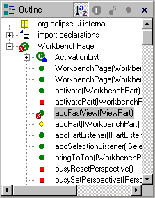
为了实现这样的设计，必须在设计图标仔细考虑掩模，这样在原始图标上可以添加文字图案。
 指南 6.22
指南 6.22
对于错误和警告，应该分别在项目上添加错误和警告图像。如果容器本身出现错误， 就应该在容器上加一个红色的X ， 如果不是容器本身而是其派生的内容出现错误，就加一个灰色的X，如果两者都没有错误就不加 X。
在编辑器中，任务对象通常用来标记文档中的位置。一旦创建了一个任务，就会在Task视图中显示。 如果任务被选中，你再次打开编辑器的时候就可以位于定义任务的那个位置。
 指南 6.23
指南 6.23
如果可以的话，在你的编辑器中实现”Add Task“功能。
书签对象也可以用来标记文档中的位置。一旦创建了一个书签，它就会在Bookmarks视图中显示。如果选中了这个书签，你再次打开编辑器时就可以位于定义书签的位置。
 指南 6.24
指南 6.24
如果可以的话，在你的编辑器中实现“Add Bookmark”功能。
 指南 6.25
指南 6.25
带有源文本的编辑器应该在状态栏中显示当前行号，也可以显示列号。也可以在编辑器中每一行显示行号。
如果编辑器包含带有可编辑单元格的表格，在单元格上单击应该选中当前的项目，并使该单元格进入编辑模式。在编辑模式，该单元格中任何下拉按钮，按钮或者其他的控件都应该能单击显示。
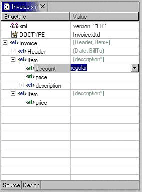
 指南 6.26
指南 6.26
表格单元格编辑器必须支持单击激活的模式，并且在编辑模式下，他们应能够通过单击显示复杂的控件。
另外，当用户从单元格点击离开或者按ENTER键时，改变应该生效。
下面的例子显示了表格单元格编辑器的良好行为方式：
－ 进入编辑模式时，下拉项的当前选项激活并且高亮
－ 当用户在下拉选项中用上下箭头移动时，要求可以移动到任何数量的选项，
并且，所有下拉选项保持可见直到用户做出明确的选择。
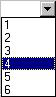
－ 当下拉项可见时，首字母导航也应该作为一种Cursoring技术来支持。
－ 当下拉项可见时，允许按“Enter”键作为用户确认选择的一种方式。
－ 当下拉项可见时，允许按“Esc”键作用用户取消选择的一种方式。
－ 进入编辑模式时，下拉控制 （向下箭头图像）会出现，而且当前选项激活并高亮显示。
－ 进入编辑模式时，可以允许使用上下键头在选项中进行选择，而无需调用下拉项。
 指南 6.27
指南 6.27
当用户从表格单元格点击离开，或者按ENTER键时，对于单元格的改动应该生效。用户可以通过按“Esc”键取消选择。首字母导航应该作为一种单元格内的Cursoring机制来支持。
 指南 6.28
指南 6.28
在编辑器中进行细小的错误验证时，使用红色花体来强调无效的内容。 当用户把鼠标移动到红色花体上面时，在一个浮动的弹出框中显示错误信息。
 指南 6.29
指南 6.29
调用Save命令时，使用Task 视图显示找到的错误。
 指南 6.30
指南 6.30
如果资源在Workbench外部被修改，在编辑器中调用Save 命令时，用户必须得到提示，询问是否忽略在Workbench 外面做的修改，还是放弃Save操作。
 指南 7.1
指南 7.1
使用视图来浏览信息的层次，打开编辑器，或者查看活动对象的属性。
视图中所做的改动必须立刻被保存。例如，如果在Navigator视图中修改了一个文件，改动就会立刻在Workspace 中生效。 在Outline视图中所做的改动会立刻在活动编辑器的编辑模型中生效。 对于Properties视图中的改变， 如果该属性是一个打开的编辑模型的属性，就必须针对该编辑模型生效；如果是文件属性，就作用于文件。
以前，有些视图会尝试采用一种编辑器类型的生命周期，使用Save命令。这样会导致混淆。Wworkbench窗口中的File菜单包含了一个Save 命令，但该命令仅仅作用于活动的编辑器。 它不应该作用于活动视图。 这样，File > Save 命令就和视图中的Save 命令相矛盾了。
 指南 7.2
指南 7.2
视图中的改动应该立刻被保存。
在一个透视图中，只能打开一个特殊的视图的实例。这是为了让用户简化部件管理设计的。用户可以调用Perspective > Show View 来打开一个视图。如果由于任何原因，他们找不到该视图了或者忘记了 这个视图的存在， 可以直接调用Perspective > Show View 来重新显示该视图。
 指南 7.3
指南 7.3
一个透视图中只能有一个视图的一个实例。
在多任务环境中，人们经常在同一时间执行多个任务。在Eclipse中，任务的分离可以通过为每个任务创建单独的透视图实现。 因此，一个视图必须能够在多个透视图中打开。 如果只能存在一个视图的一个实例，那么就无法实现多任务。
 指南 7.4
指南 7.4
一个视图必须能够在多个透视图中打开。
应该允许用户从Window > Show View打开任何视图，无论是作为菜单中明确的一项，还是 作为Window > Show View > Other...对话框中的一项。
 指南 7.5
指南 7.5
视图应该可以通过 Window > Show View菜单打开。
标题条中视图的标签必须用Perspective > Show View菜单中视图的名字作为前缀。由于你不可能改变 Perspective > Show View菜单中的选项名字，这意味着你也不能改变视图的名字。不过，你可以在视图标签中加其他的文字来表明视图的状态。
 指南 7.6
指南 7.6
标题条中视图的标签必须用Perspective > Show View菜单中视图的名字作为前缀。
在大多数情况下，一个视图包含一个控件或者Viewer。但是，也可能在视图中包含多个Viewer或者控件。 如果这些控件连接在一起，也就是在一个控件中的选择会改变另一个中的输入的话，最好把视图分成两个。这样用户可以更自由地根据需要打开其中一个视图。为了支持用户任务，也可以在这些视图间建立特殊的连续。另外，这样用户可以更容易地创建一个带有不同视图组合的透视图。
 指南 7.7
指南 7.7
如果一个视图包含多个控件，最好将其分成2个或多个视图。
 指南 7.8
指南 7.8
视图第一次打开时，从透视图的状态获得视图输入。
如果视图用来浏览资源的层次（例如，Navigator或者Packages 视图），视图输入可以从窗口输入得到。窗口输入定义了透视图中可见的资源的范围，并且由用户在Navigator中选择资源或者调用 Open in New Window 时定义。例如，如果打开了Navigator视图，它会从透视图获得窗口输入。该结果用作视图的初始输入。
 指南 7.9
指南 7.9
如果视图显示了一颗资源树，考虑使用窗口输入作为该视图中可见信息的根。
将视图下拉菜单用于外观表现型命令，而不要用于和选择内容相关的命令。 有些命令会影响视图的外观，但不影响视图中的对象。不要把外观表现型命令放在上下文菜单中。例如，Navigator视图中的Sort and Filter命令会影响资源的外观表现，但不影响资源本身。
 指南 7.10
指南 7.10
将视图下拉菜单用于外观表现型命令，而不要用于和选择内容相关的命令。
| 视图模式（例如，Hierarchy视图中的3种模式） |
| [需要分隔线] |
| Working sets （例如 Navigator 和 Package Explorer中 使用的Select/Deselect/Edit ） |
| [需要分隔线] |
| 排序 |
| [可以有分隔线] |
| 过滤 |
| [可以有分隔线] |
| 视图布局 （Hierarchy视图中的水平或者垂直） |
| [可以有分隔线] |
| 和编辑器的连接 |
| [需要分隔线] |
| 视图本身的其他外观表现型命令 |
| [需要分隔线] |
| 其他plug-in的外观表现型命令 |
 指南 7.11
指南 7.11
在视图下拉菜单中使用标准的命令顺序。
 指南 7.12
指南 7.12
把最常用的命令放在工具条中。任何在工具条中出现的命令 也必须在上下文菜单或者视图菜单中出现。
 指南 7.13
指南 7.13
上下文菜单中尽包含选择内容相关的动作，而不包含外观表现相关的动作。
为了和Eclipse中的其他视图保持一致，每个视图必须在上下文菜单中采用通用的命令顺序。下表列出了命令的顺序。在该表中，每一项代表一类命令。上下文菜单中不同类别的命令必须
用分隔线和其他命令分开。
| New |
| Open |
| Navigate + Show In |
| Cut, Copy, Paste, Delete, Move, Rename and other refactoring commands |
| Other Plugin Additions |
| Properties |
New 类别包含了创建新对象的动作。Open 类别包含了打开编辑器中所选内容的动作。 Navigate类别包含了设置焦点到视图输入，或者显示另一个视图中所选内容的动作。其他的类别你可以很容易地从名字看出其含义来。
 指南 7.14
指南 7.14
在视图上下文菜单中使用标准的命令顺序。
 指南 7.15
指南 7.15
在上下文菜单中对于每个选择类型使用固定的一套命令。并根据选中的对象状态来设置每个命令的可用状态。
实现技巧：
为了得到一个一致的上下文菜单，plug-in开发者引入了一个新的对象类型，使用一个动作组（ActionGroup类，这个Java类用来装配上下文菜单）在上下文菜单中添加自定义命令。 果使用这种方法，这个动作组就可以在同样的对象出现的其他视图中重复使用。
 指南 7.16
指南 7.16
如果一个对象在不止一个视图中出现，就必须都使用相同的上下文菜单。
平台UI的基本目标之一是可扩展性。 事实上，正是可扩展性让你可以在平台中自由地增加新的视图，编辑器，透视图和动作。当然，可扩展性也有其两面性。你希望能够扩展平台，而其他人可能希望扩展你的视图或者编辑器。在一个plug-in中增加来自另一个plug-in的编辑器菜单，工具条或者上下文菜单的动作的做法是很常见的。
在平台中，视图的菜单和工具条会被平台自动扩展。相反，上下文菜单的扩展要通过视图和平台的合作完成。为了实现这种合作，视图要把它所包含的每个上下文菜单在平台中进行注册。它还必须为视图中的每个对象类型 定义一个命令过滤器。有了命令过滤器，在一个plug-in中添加另一个plug-in定义的视图中的对象的命令就更容易了。该目标通过对象的类型和属性来描述。要获得更多关于如何实现该概念的信息，请参考Creating an Eclipse View.
 指南 7.17
指南 7.17
在平台中注册视图中所有的上下文菜单。
为视图中的每个对象类型实现一个命令过滤器。
全局命令和内置菜单的完整列表在IWorkbenchActionConstants.java中定义。（如下）
File 菜单: Revert, Move, Rename, Refresh, Print, Properties
Edit
菜单: Undo, Redo, Cut, Copy, Paste, Delete, Select All, Find/Replace, Add
Bookmark, Add Task
Navigate 菜单: Go Into, Back, Forward, Up One Level, Next,
Previous, Back, Forward
Project 菜单: Open Project, Close Project, Build
Project, Rebuild Project
 指南 7.19
指南 7.19
如果一个视图支持Cut，Copy，Paste或任何其他全局命令， 这些命令应该也能够通过窗口菜单条和工具条中的同样命令来执行。
在Eclipse v2.1 中，虽然视图不能直接在主菜单条或工具条中添加自定义命令，它仍然能够
通过使用 “action set / part associations”（ actionSetPartAssociations extension
point）让你可以把动作集和特定的部件（视图或者编辑器）关联起来，这样就能让命令显示出来。
例如，Eclipse中的Java tooling 把这个用在Package Explorer上。
视图（或者编辑器）的所有命令必须都能在主菜单条上找到。仅仅那些经常使用的命令才放在
上下文菜单中。
另外，这些视图的主透视图（例如Java和JavaBrowsing 透视图s）也应该把这些动作集和
透视图关联起来，来提高UI稳定性。
如果视图中有一个静态输入对象，也就是说它的输入不是从其他部分的选择内容得到的，视图的状态就应该在会话间保持不变。如果视图有一个动态的或者瞬态的输入对象，就没必要在会话间保持其状态。在Workbench中，Navigator视图的状态，包括输入状态和展开状态，是在会话间保存的。关于如果实现持续性的更多内容，请参考"Creating an Eclipse View".
 指南 7.20
指南 7.20
在会话间保持每个视图的状态。
Navigation视图必须在视图菜单中支持 ”Link with Editor“。在Eclipse 2.1 中，该功能作用于每个视图的设置。如果用户要频繁地打开关闭该功能，也可以放在工具条上，但不是必须这么做。（Hierarchy视图和 Java Browsing 透视图中的视图可以支持该功能，但没有放在工具条上，因此
他们希望该功能一直打开。）
”Link with Editor“的行为如下：
 指南 7.21
指南 7.21
导航视图必须在视图菜单中支持 ”Link with Editor“。
调用Window -> Open Perspective -> X就能打开一个新透视图，其中X在Eclipse中表示某个特定的透视图。其结果会在workbench窗口中新开一个类型为 X 的透视图。例如，如果你调用Window -> Open Perspective -> Resource，就会打开一个资源 类型的透视图。Eclipse预先定义了一些透视图类型，例如Resource，Java和Debug。透视图的类型决定了视图的初始布局以及在透视图中可见的命令集。
作为一个plug-in开发者，你可以在Eclipse中添加自定义的新透视图类型。为此，你必须定义一个 perspective extension。每个extension 有一个perspective factory，这是一个定义视图初始布局以及透视图中可见的命令集的Java类。你也可以在现有的透视图类型中加入自定义的动作或者视图。关于如何实现这些概念的更多信息请参考 Using Perspectives in the Eclipse UI.
如果有一组相关的非模态任务都可以使用一个预定义的命令和视图配置，并且这些任务都长期存在的话，就应该创建一个新的透视图类型。必须使用面向任务的处理方式。作为开发环境，Eclipse 设计成可以符合大规模产品开发团队的需求，从产品经理到内容开发者，以及产品测试者。它有充分的可扩展性，而且可以配置数百个命令，向导，视图和编辑器的extension。换句话说，很多功能你 可能永远也用不到。如果所有东西在UI都可见的话，会引起视觉超负荷或者混淆，为了避免这种情况，透视图可以用来限制面向任务的视图和命令集的显示。
例如，Java代码生成是一个长期而且复杂的任务，所以应该创建一个Java 透视图。在Eclipse中，Java 透视图包括一个编辑区域，Packages Explorer 视图，Hierarchy视图，Tasks 视图和Outline 视图。也可以看到Java和Debug命令集。 这些组件对于很多长期的Java 编码任务都是很有用的。
对于短暂的任务创建一个新透视图类型是不合适的。 例如，资源check-in是一个短期任务，因此最好使用当前透视图中的一个视图来完成。
 指南 8.1
指南 8.1
如果长期任务包含很多较小的，非模态的任务，应该为其创建一个新的透视图类型。
如果你的plug-in只增加了少量的视图，并且只扩展了现有的任务，最好在现有的透视图中增加这些视图。例如，如果你创建了一个视图用来扩展Java代码创建任务，就不要创建新的透视图，而把它增加在现有的Java 透视图中。这样的策略可以更好地和现有的平台整合。
 指南 8.2
指南 8.2
如果你只想增加1个或两个视图的话，考虑扩展现有的透视图类型。
每个视图的尺寸和位置由perspective factory控制。这些属性应该以合理的方式定义，这样用户可以在需要的时候修改视图大小或者移动视图。 一个重要的需要考虑的问题是透视图中视图或者编辑器之间的总体顺序。例如，导航视图的初始位置可以放在编辑区域的左边，Outline视图可以放在编辑区域的右边或者导航视图的下面，其他的视图可以放在编辑区域的右下方。
 指南 8.3
指南 8.3
透视图中每个视图的尺寸和位置要合理地定义，这样可以用户在需要的时候修改视图大小或者移动视图。定义初始布局时，要考虑透视图中视图或者编辑器之间的总体顺序。
一个透视图必须至少有两个部分，包括可见的视图和编辑区域。如果没有，那么必须重新检查透视图 来确定是否改用视图和编辑器更合适。
 指南 8.4
指南 8.4
如果一个透视图只有一个部分，那么可能用视图或者编辑器更合适。
如果编辑器区域是通过程序隐藏的，如果用户在透视图中打开了一个编辑器，编辑器区域就是可见的。 此前占据该编辑器区域的视图就会缩小。因此，定义一个非空的编辑器区域很重要，哪怕编辑器是用程序隐藏的。
 指南 8.5
指南 8.5
如果不希望在透视图中有一个编辑器区域，隐藏它。 不要把编辑器区域的大小变成点使它不可见。
File -> New菜单必须提供任务中创建常用对象的向导。例如，在Java 透视图中，File -> New 菜单包含菜单项创建包，类和接口的。
Window -> Show View 菜单应该提供透视图中的初始视图，并且提供对于当前任务很重要的额外视图。Navigate -> Show In 菜单应该允许用户浏览他们的内容。

在扩展Window -> Open Perspective菜单时，必须考虑应用开发的生命周期。大多数应用的开发遵循 一个明确定义的生命周期，从设计/建模，到编辑/创建，到调试/测试，到组装/部署。每个透视图都会是这些步骤中的一个。必须用Open Perspective菜单来连接当前透视图和支持其下游及上游任务的 透视图，以允许交互式的开发。
例如，Java 透视图用在较大的生命周期里面，涉及Java和Debug任务。Window -> Open Perspective 菜单就应该提供所有相应的透视图。
 指南 8.6
指南 8.6
在窗口菜单条中提供和透视图的任务相关，以及和更大工作流相关的命令和命令集。
例如，考虑一下这种情况，用户选择了一个对象并且调用了一个命令。在命令被调用的透视图中，用户可能打开了一系列的视图和编辑器。这些代表了用户当前的工作状态，或者上下文。如果创建一个新的 透视图，就会丢掉当前的上下文，强迫用户重新创建上下文。这样很浪费时间。
 指南 8.7
指南 8.7
只有当用户明确要求时，才打开新的透视图。这种情况下，用户同意离开旧的上下文，创建新的上下文。
在某些情况下，打开新的透视图是另一个命令产生的副作用。例如，如果用户开始调试他们的应用代码，就可能被切换到Debug 透视图。如果要实现这种行为，用户应该能够把该行为关闭。 在命令对话框或者首选项页面中提供对该行为的设置。
 指南 8.8
指南 8.8
如果打开新的透视图是另一个命令产生的副作用，用户应该能够把该行为关闭。
新的透视图可以在当前窗口或者新窗口中打开。用户可以通过workbench 首选项控制这种行为。如果plug-in中的代码打开了一个新的透视图，应该遵循用户的首选项设置。
 指南 8.9
指南 8.9
新的透视图应该根据用户首选项设置来决定在当前窗口打开，还是在新窗口中打开。
关于在New，Open perspective 和Show View菜单中添加的自定义命令，在这些菜单中作为快捷方式添加的向导，透视图和视图的列表不能超过 7 +/- 2 个。
 指南 8.10
指南 8.10
在New，Open Perspective和Show View菜单中添加的快捷方式列表不应该超过 7 +/- 2 个。
 指南 9.1
指南 9.1
使用动作集（action set）在窗口菜单条和工具条中添加自定义动作。
File菜单包含了文件相关的动作，例如 Save， Close，Print，Import，Export和Exit。File -> New 菜单的内容取决于透视图的类型。然而，用户可以使用Window -> Customize Perspective... 菜单项添加或者删除菜单项。Import和Export对话框的内容分别由相应的导入和导出向导决定。
Edit菜单包含了面向编辑器的动作，例如Undo，Redo，Cut，Copy和Paste。这些动作作用于活动部分（标题栏加深的部分）。编辑器在该菜单中增加项目是很常见的。但一般不使用动作集在Edit菜单中添加动作，动作集常用于全局命令，而Edit菜单作用于特定部分，并且和该部分的数据交互。
Navigate菜单包含了浏览的动作例如 Go to，Open Type，Show In，使用户既可以浏览，也可以仔细查看代码。
Project菜单包含了可以应用到workspace内容的动作。例如Rebuild All和Open Type。 一个动作集可以添加动作来搜索整个workspace，或者生成项目信息等。
Window菜单包含了用来管理窗口和系统首选项的动作。它还包含Open Perspective和Show View 子菜单，这些子菜单包含了能影响窗口内容状态的动作。
 指南 9.2
指南 9.2
当你在动作集中添加自定义动作时，要遵循平台的规则。
工具条包含了菜单条中最常用的动作。因此，你必须先在菜单条中添加自定义动作，然后把其中常用的 添加到工具条中。
 指南 9.3
指南 9.3
首先在菜单条中添加自定义动作，然后把其中常用的添加到工具条中。
每个动作集的内容必须用面向任务的方式定义。例如，Java动作集包含了创建新包，类和接口的动作。它也包含了命令Goto Type，该命令可以在一个类上打开一个编辑器。这些组成了一系列相关的动作，用户可以根据活动的任务，打开或者关闭这些动作。
 指南 9.4
指南 9.4
针对某个特定的任务来定义每个动作集。
动作集的大小也很重要。如果动作集太大，会充满菜单或者工具条，就减少了用户定制菜单和工具条的机会。同时，如果动作集太小，用户会发现定制菜单和工具条太费劲了。如果动作集多于7项，就把它拆开。
对于一个动作集，并没有一个最合适的大小。但是，它必须设计成包含动作的最小语义集。 避免在整个plug-in中只提供一个动作集。
 指南 9.5
指南 9.5
一个动作集应该包含动作的最小语义集。避免在整个plug-in中只提供一个动作集。
一个动作集可以在两个或者多个视图和编辑器之间共享。例如，Java Refactoraction动作集可以用于Java编辑器，Outline视图和Hierarchy视图中的选择内容。这种情况下，可以为workbench 定义一个action set extension来共享这些动作。一旦定义了动作集，它就可以自动被透视图开发者包含在 透视图中，或者被用户添加到一个透视图中。
动作集不能用来把命令从某个视图移动到窗口菜单条和工具条中。这样只会让用户界面混乱。
 指南 9.6
指南 9.6
使用动作集来共享那些对于两个或多个视图或编辑器都有用的动作。
窗口中可见的命令可以通过调用Window -> Customize Perspective 改变。在随后出现的对话框里面，你可以在File -> New菜单， Window -> Open Perspective菜单或者 Window -> Show View 菜单中添加或者删除项目。你也可以添加或删除动作集。通常，可见的动作集应该由用户控制， 而绝不能用程序改变。这有两个理由。首先，用户希望能够控制环境，而不是被环境控制。其次，用户是最能理解当前的任务，以及完成该任务的合适的动作集。
 指南 9.7
指南 9.7
让用户控制可见的动作集，不要试图帮他们控制它。
 指南 9.8
指南 9.8
“Open Object” 动作必须在窗口的Navigate下拉菜单中出现。
 指南 9.9
指南 9.9
使用全局状态条来显示状态相关的信息。
在Eclipse中，有两种方法修改一个对象的属性：在Properties 对话框中，和在Properties视图中。这两种方法在不同的情况下使用。
Properties视图通常用来编辑一个编辑器中一系列对象的属性，在这种情况下，快速地获得属性很重要，而且你要快速地从一个对象切换到另外一个。
 指南 10.1
指南 10.1
如果需要快速地获得对象的属性，并在对象间切换时，使用Properties视图编辑对象的属性。
一个对象的属性应该能很快地计算得到。如果推测一个对象的属性很麻烦的话，Properties视图提供的快速获得对象的属性就变得没有意义了。这种情况下，无法快速得到对象属性，就应该使用 Properties对话框。
 指南 10.2
指南 10.2
在计算一个对象的属性很麻烦时，使用 Properties对话框来编辑对象的属性。
在某些情况下，一个对象的属性依赖于另外一个属性，这样，一个属性的改变就会影响另一个属性，或者仅仅 enable/disable
选项也会改变另一个的属性。这种情况下，用Properties对话框来表示这些属性语义间的连接比较合适。
 指南 10.3
指南 10.3
用Properties对话框编辑和同一对象的属性有复杂关联的属性。
 指南 10.4
指南 10.4
Properties对话框必须包含Properties视图中所有的属性。
 指南 11.1
指南 11.1
Tree和Table都可以有一个checkbox和一个cell 项相关联，用户可以选择项目或者改变checkbox的状态。改变选择不应该自动改变被选择项的checkbox状态。不过，当某项的checkbox状态变化时，就应该设置该项被选择。
作为plug-in开发者，你应该尝试在现有的部分添加自定义的新动作。这样可以更好地和平台集成，
并更好地利用用户已有的知识。
 指南 12.1
指南 12.1
如果合适的话，使用plug-in注册表在Eclipse的标准组件中添加动作。
当你扩展Navigator，Outline，Properties，Tasks和Bookmark 视图等标准组件时，你必须确保你的专用组件涵盖了基本组件的特性（拖放支持，键盘导航，选择行为等）。
 指南 12.2
指南 12.2
如果你的组件子类化或复制标准组件，必须包含标准组件的特性。
 指南 13.1
指南 13.1
使用plug-in 注册表在Navigator视图菜单，工具条和上下文菜单中添加动作。
如果在上下文菜单中添加了自定义的对象相关的命令，尽量确认目标对象，避免在Navigator 视图给错误的对象添加命令。例如，一个Java 命令可能作用于扩展名为.java的IFile，或者是有Java 支持的IProject。 如果Java 命令出现在非java对象上就会引起混淆。
有些动作反映的是工具使用，而不是对象类型。例如，一个源代码库plug-in可能会提供文件的check in，check out。这些动作只有当用户选择使用源代码库plug-in时才能出现在Navigator中的资源。为了控制这些动作的可见性，plug-in必须为这些受管理的资源应用一个project nature，并且在所有的上下文菜单中添加该project nature。
关于更多命令过滤的信息，请参考Creating an Eclipse View。 资源的标准属性都在IResourceActionFilter.java中定义（如下）。
public interface IResourceActionFilter extends IActionFilter {
public static final String NAME = "name";
public static final String EXTENSION = "extension";
public static final String PATH = "path";
public static final String READ_ONLY = "readOnly";
public static final String PROJECT_NATURE = "projectNature";
}
项目过滤的基本属性在IProjectActionFilter.java中定义。
public interface IProjectActionFilter extends IResourceActionFilter {
public static final String NATURE = "nature";
public static final String OPEN = "open";
}使用IResourceActionFilter.java 和 IProjectActionFilter.java 中定义的属性来控制Navigator视图中上下文菜单动作的可见性。
在任何资源可能出现的视图中，都应该包含“Navigate -> Show In Navigator”命令。一旦被调用，该命令应该选中并且在Navigator视图中显示资源。
 指南 13.3
指南 13.3
在每个视图中，使用“Navigate -> Show In Navigator” 命令在Navigator视图中显示资源。
 指南 14.1
指南 14.1
使用Core Resources Management plug-in中的 Marker Manager来创建新的marker（任务，错误和警告）。
 指南 14.2
指南 14.2
每个marker的描述文本必须简洁，这样才能在Eclipse的状态条中放的下。
 指南 14.3
指南 14.3
使用plug-in 注册表在Tasks视图菜单，工具条和上下文菜单中添加自定义的新动作。
如果在上下文菜单中添加了对象命令，应尽可能地确认目标对象，以避免在Tasks视图中给错误的对象添加了命令。在实现层，每个Tasks视图中的对象是一个marker，这是把注释和资源联系到一起的常用机制。使用IMarkerActionFilter.java中的属性来控制Task对象动作的可见性（如下）。关于命令过滤的更多信息，请参考Creating an Eclipse View。
public interface IMarkerActionFilter extends IActionFilter {
public static final String TYPE = "type";
public static final String SUPER_TYPE = "superType";
public static final String PRIORITY = "priority";
public static final String SEVERITY = "severity";
public static final String DONE = "done";
public static final String MESSAGE = "message";
}
 指南 14.4
指南 14.4
使用 IMarkerActionFilter.java中定义的属性来控制Tasks视图中上下文菜单动作的可见性。
在合适的情况下，应该由编辑器来负责在编辑器中创建新的任务对象。要获得这方面的更多信息，请参考编辑器.
 指南 14.5
指南 14.5
支持F1键盘命令，按F1键后，弹出信息框，给出在Task视图中所选项的详细描述信息。
当你需要让用户设置全局选项时，就应该创建一个新的首选项页面。 例如，Prefenrence对话框中就包含了一组首选项页面来设置Java 编译的全局首选项。如果这些首选项设置改变，会影响整个Java plug-in。
 指南 15.1
指南 15.1
全局选项应该在首选项对话框中显示。
Preference页面不能用来给视图，编辑器或者窗口的特定实例显示本地选项。在这种情况下，用户应该查看控件本身的菜单和工具条，对其进行定制。如果这些选项出现在Preference对话框中，会模糊选项定制的位置，并让用户感到困惑。
 指南 15.2
指南 15.2
对于特定的视图，编辑器或者窗口，应该在其本身通过菜单或工具条显示其首选项设置。
 指南 15.3
指南 15.3
从单个的首选项页面开始。然后根据你的需要设计更多页面。
在嵌套设计中，在Preference对话框中添加一个根首选项页面，然后在这个根页面下添加子页面。 根首选项页面永远不能为空。相反，它应该包含最常用的首选项设置，或者对于plug-in行为影响很广泛的首选项设置。在根页面下，对于plug-in中的每个主要功能块都应该定义一个子页面。
没有必要把焦点设在首选项页面上，因为在首选项页面可见后，Eclipse平台会把焦点设置在左面的树上。
 指南 15.4
指南 15.4
如果创建了一个首选项组，用根页面来显示最常用的首选项设置，或者影响很广泛的首选项设置。特定的功能相关的设置放在在子页面中。根首选项页面不能为空。
每个新的plug-in必须把它的plug-in 首选项，向导和视图集成在现有的首选项，向导和视图类别中，而不是盲目地创建新的类别。
 指南 15.5
指南 15.5
对于一个新的plug-in，首先考虑把其首选项，向导和视图和现有的类别集成，而不要先考虑创建新的类别。
如果你是一个编辑器开发者，编辑器和Outline视图间的关系就很重要。关于编辑器和Outline视图的合作方面的更多信息， 请参考编辑器.
在Eclipse中，一个对象的属性可以用Properties对话框或Properties视图显示。Properties视图通常用来编辑一个编辑器中一系列对象的属性，这种情况下快速地获得属性很重要，而且你要快速地从一个对象切换到另外一个。
关于如何使用Properties视图或者Properties对话框的更多信息，请参考Properties.
在编辑器中，书签对象通常用来标记一个文档中的位置。 一旦创建了一个书签，它就会显示在 Bookmarks视图中。如果该书签被选中，在你重新打开编辑器时，就会位于该书签定义的位置。
在合适的情况下，新的书签对象的创建应该由编辑器实现。 更多信息请参考编辑器。

Flat Look设计可能对于某些特定的用户任务很合适，也可能更能吸引某些用户。但是，不应该因为它看起来和普通的平台很不一样就使用它。要使用Flat Look设计，必须充分考虑用户的使用场景。该设计通常适用于大量的属性编辑和配置编辑，例如，编辑Eclipse的plugin.xml文件 和J2EE Web 应用的部署描述文件。
 指南 16.1
指南 16.1
在用户涉及广泛的属性编辑和配置编辑时，使用Flat Look设计。
需要时，使用“More...”按钮进行浏览（功能和超链接相似）
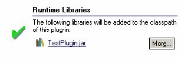
在Overview页面，先提供基础或者核心部分，压缩高级部分。 在其他页面，提供一个“Home”图标使用户可以回到Overview页面。

 指南 16.2
指南 16.2
在Overview页面展示核心部分，并且在其他页面提供一个“Home”图标使用户可以回到Overview页面。
在Flat Look编辑器的一个Tab页面中不要再使用Tab。 使用其他的设计或者方式来处理Tab。
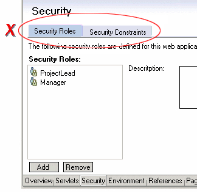
合适的话，总是提供一个“Source” Tab。给区域，控件等分配用于键盘导航的记忆符号。

在Outline视图中，使用在内容编辑器中和Tab对应的分组元素来组织树视图。

 指南 16.3
指南 16.3
在内容编辑器中使用和Tab对应的分组元素来组织Outline视图中的树视图
资源概念的产生源于以下原因：
在UI层，资源也很重要。如果在IResource中添加了一个自定义对象命令，装饰（decorator）或者属性页面，
平台要保证这些内容在该资源出现的任何视图和编辑器中都可见。例如，在Navigator，Hierarchy视图
和Package视图中你都能够看到某个 .java文件。对于用户来说，这些.java文件不管出现哪个视图，都是同一个对象，因此，对于所有的视图，该对象的外观，上下文菜单以及属性都应该是一致的。
在某些情况下，为了外观表现的考虑，一个特定的视图或者编辑器的实现可能将资源包装另一个对象中。如果这个包装对象和资源等同的话，必须将这种等同性通知平台。在资源显示时，平台可以把资源上添加的命令应用到和资源等同的包装对象上。这样就可以保证在平台内对象的表现一致性。
对象所包装的资源可以通过在模型对象上实现IAdaptable并返回IContributorResourceAdapter来显示。关于IContributorResourceAdapter实现的更多信息，参考Eclipse Corner。
 指南 17.1
指南 17.1
使用IContributorResourceAdapter 来显示包装对象中的资源。
在对话框或者向导中，应该为每个按钮或者控件定义快捷键。在合适的快捷字符下面加下划线显示快捷键。
 指南 18.1
指南 18.1
工具提供的所有功能都应该可以通过鼠标或者键盘完成。
| Key | {Key} by itself | SHIFT+{Key} | CTRL+{Key} | CTRL+SHIFT+{Key} | ALT+{Key} | CTRL+ALT+{Key} |
| A | Edit / Select All | |||||
| B | Project / Build | (View) Bookmarks | ||||
| C | Edit / Copy | |||||
| D | (JDT editor) Display | |||||
| E | (JDT editor) Next Problem | (JDT editor) Previous Problem | ||||
| F | Edit / Find / Replace | |||||
| G | ||||||
| H | Edit / Search | |||||
| I | ||||||
| J | ||||||
| K | (View) Tasks | |||||
| L | Edit / Go to Line | |||||
| M | (JDT editor) Add Import | (JDT) Refactor / Move | ||||
| N | File / New / Other | (View) Navigator | ||||
| O | (JDT editor) Organize Imports | (View) Outline | ||||
| P | File / Print | (View) Properties | ||||
| Q | (JDT editor) Inspect | |||||
| R | ||||||
| S | File / Save | File / Save All | Window / Switch to Editor | |||
| T | (JDT) Open Type | |||||
| U | ||||||
| V | Edit / Paste | |||||
| W | ||||||
| X | Edit / Cut | (JDT) Refactor / Extract method | ||||
| Y | Edit / Redo | (JDT) Refactor / Redo | ||||
| Z | Edit / Undo | (JDT) Refactor / Undo | ||||
| Space | (JDT editor) Content Assist | |||||
| Backspace | Windows: Undo | |||||
| Tab | (JDT editor) Shift Right | (JDT editor) Shift Left | ||||
| Insert | Windows: Paste | Windows: Copy | ||||
| Delete | Edit / Delete | Windows: Cut | Edit / Delete | |||
| Home | ||||||
| End | ||||||
| Page Up | ||||||
| Page Down | ||||||
| Insert | ||||||
| Delete | ||||||
| Hyphen (-) | Show System Menu | Show View Menu | ||||
| Left Arrow | ||||||
| Right Arrow | ||||||
| Up Arrow | ||||||
| Down Arrow | ||||||
| F1 | Help | Help | Help | Help | ||
| F2 | (Navigator view) Rename, (JDT editor) Open JavaDoc | |||||
| F3 | (JDT editor) Open on Selection | |||||
| F4 | (JDT editor) Open Type Hierarchy | File / Close All | File / Close | |||
| F5 | (Navigator view) Refresh, (Properties view) Refresh, (Debug) Step Into | |||||
| F6 | (Debug) Step Over | Next Editor | Previous Editor | |||
| F7 | (Debug) Run to Return | Next View | Previous View | |||
| F8 | (Debug) Resume | |||||
| F9 | ||||||
| F10 | (Debug) Relaunch last | |||||
| F11 | (Debug) Debug | (Debug) Run | ||||
| F12 | Activate Editor | Activate Editor |
在这一节，我们提供一些例子来看看在Eclipse平台下设计，实现常见的用户界面的最好的方法。
当设计提供格式或编译检查的编辑器时，遵循Eclipse平台的Java工具设计原则。
如果可能，提供即时格式检查。如果源代码中有错误，使用红色“波浪线”来支持错误可能发生的地方。在编辑器右侧使用一个红色方格来显式错误在文件大致的位置。在编辑器的右上角使用突出标记来表示文件包含错误或者警告。红色代表错误，黄色代表警告。

在用户存盘后，在编辑器左侧使用突出标记表示错误或警告。当用户将鼠标停留在标记上时，显示描述文本。此外，在内容编辑器的Tab上显示装饰图标。在Eclipse Workspace的资源树视图中，在资源的图标上加适当的装饰来显示错误或警告，并且在所有父节点上都放置图标装饰。最后，在Task视图中，添加一条表示错误或警告的记录。

除了支持编辑器标准的内容辅助外，编辑器还应该使用Qiuck Fixes和Quick Assist。在编辑器左侧使用一个小的泡泡标记来建议如何修复源代码的问题。用户在标记上点击，或者使用Edit -> Quick Fix菜单都可以看到建议的信息。

甚至在没有格式错误的文件中，用户也应该能使用Quick Fix机制来获得快速帮助。例如，将一个表达式赋予一个本地变量。

如果编辑器是用来编写某种语言的程序，应该提供代码超链接支持。当鼠标停留在源代码上，同时按Ctrl键，将使得象类，方法，成员变量等编程语言标识变成可以点击的链接，通过链接可以直接显示相关的定义。
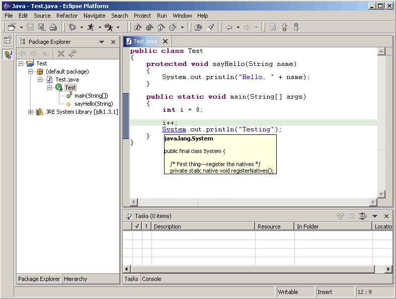
如果可能，plug-in应该提供编程语言级或应用开发级的重构支持。例如，如果用户将一个Java类的方法重新命名，重构可以使得用户自动找到并修复所有方法引用的地方。如果用户在一个Web应用中修改URL，重构可以使得用户自动更新所有对该URL的引用。
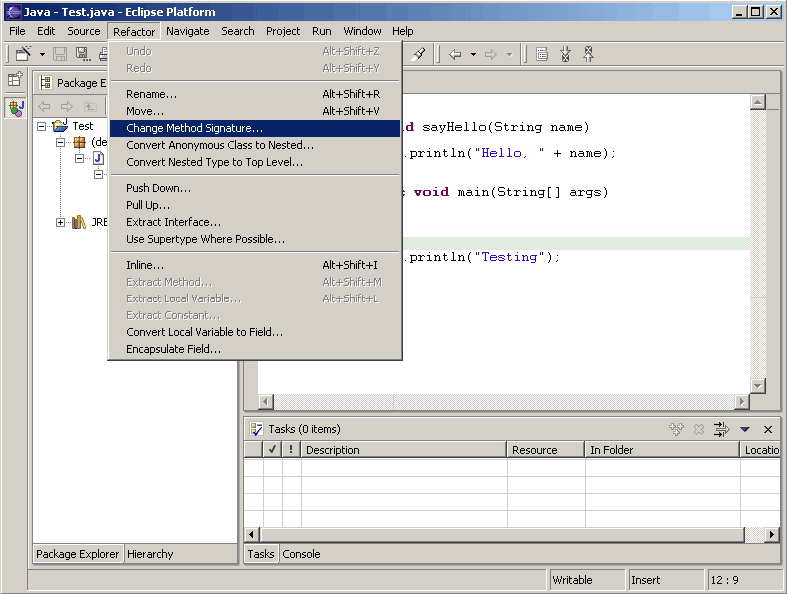
我们来看看为什么菜单项在上下文菜单中应该被添加或删除。我们的目标是保证上下文菜单的菜单项不超过20个。
首先，删除对所选对象不感兴趣的菜单项。第二，删除不常用的菜单项。第三，检查对所选对象不感兴趣但经常使用的菜单项。最多加五个这样的菜单。第四，删除所有状态不可用的菜单项，除了象复制，粘贴的剪贴板操作，以及团队，比较，替换菜单的子菜单。第五，删除经常使用，对所选对象感兴趣，但是有内置键盘快捷方式支持的菜单项，不过剪贴板和存盘操作除外。
区域标题应该使用标题大写格式。区域类直接的距离应该是32像素。
如果页面左侧有一个列表框，列表框和右侧内容（比如是显示所选列表框某一项的属性）的距离应该是10像素。

对于标签和输入域，使用RGB值（160，160，164）标识可用状态，（0，0，0）表示只读状态，（128，128，128）表示不可用状态。

对于列表框控件，边框使用RGB值（0，0，0）表示可用状态，（128，128，128）表示不可用状态。

当两个或更多的装饰发生冲突时，选用合适的装饰就非常重要。例如，CVS plug-in会在基本图像上放置一个装饰图像，而“Decorate Example”plug-in可能在同一位置放置另一个图像，这样两个装饰就彼此冲突了。如果两个不同装饰器在同一资源上所做的装饰发生冲突，用户应该可以选择使用或关闭某个装饰来获得所期望的结果。
实现提示：
设计和Eclipse视图提供的基本装饰不冲突的自定义装饰是非常重要的。例如，Package Explorer视图在有编译错误的Java文件上装饰问题标记（被放置在基本图像的左下角）。那么在资源的问题标记的位置提供自定义装饰就不太好，开发者应该避免这么做。如果自定义装饰出现在左下角，自定义装饰和问题标记装饰就有可能冲突，因此用户就不能看到其中的一个。解决方法是在右下角提供自定义装饰，这样就不会和Eclipse提供的基本图像装饰发生冲突。左上角是第二个选择，虽然它会和二进制项目装饰发生冲突。左下和右上角都应该避免。
指南 1.1
遵循并应用好的界面设计原则：用户可控，直接， 一致，容错，反馈，美观和简洁。
指南 1.2
遵循平台的用户界面惯例。
指南 1.3
注意不要混用UI 隐喻。 这样会引起原始概念和你的应用相混淆。
指南 1.4
如果你有好的想法，和Eclipse社区一起工作，把Eclipse变成更好的平台。
指南 1.5
在菜单，工具提示（ToolTip）以及所有的窗口，对话框，标签（Tab），表格的列标题（Column Heading）和按钮（Push Button）的标题中，都应该使用标题形式的大写。除了第一个和最后一个单词的首字母大写，所有名词，代名词，形容词，动词和副词也要首字母大写。不要包含结束标点。
指南 1.6
对于对话框或窗口中的控件标签，包括check box，radio button，group label，和simple text fields，均采用句子形式的大写。把第一个单词的首字母大写，以及其他象Java这样的词也要首字目大写。
指南 1.7
在你的plug-in中创建资源的本地化版本。
指南 1.8
如果出现一个错误需要用户的明确输入或者立刻注意，使用模态对话框。
指南 1.9
如果产品中出现编程错误，使用模态对话框，并且log出错信息。
指南 2.1
重用核心可视化概念来保持它们在Eclipse plug-in中表现方式和含义的一致性。
指南 2.2
使用Eclipse 256色调色板来创建所有类型图标的活动或选中状态。
指南 2.3
使用Eclipse 8 色调色板来创建透视图，视图，工具栏，工具栏向导和局部工具栏图标的可用状态。
指南 2.4
使用Eclipse 2 色调色板创建工具条，工具条向导和局部工具条图标的不可用状态。
指南 2.5
在用户界面中适当的位置使用适当的图标。
指南 2.6
对于每个类型的图标遵循其特定的尺寸规范。
指南 2.7
按照图示的特定位置裁减图标以保证其在用户界面中排列整齐。
指南 2.8
遵循不同类型图标的定位指南来优化这些元素相对其他元素的排列位置。
指南 2.9
用Eclipse的特殊蓝色183色调色板创建向导图形。
指南 2.10
遵循特定的尺寸规范来设计向导图形
指南 2.11
根据显示的特定摆放位置裁剪向导图形，以确保其在向导标题区域排列整齐。
指南 2.12
使用预定义的目录结构和命名惯例。
指南 2.13
保留原始的目录名字。
指南 2.14
在plug-in中把所有的图形保存在一个或尽量少的一级用户界面目录中以减少图形的复制。
指南 2.15
使用提供的活动，可用和不可用状态。
指南 2.16
采用缩写文件名，不要使用图标名称的全名。 例如，New Interface 变成 “newint” 。
指南 2.17
在文件名中使用小写字母。 例如，DTD 写成 “dtd”。
指南 2.18
在文件名中尽可能使用少于10个字母。 （下划线也作为一个字母计算）
指南 2.19
使用文件名后缀来描述它在工具中的位置和功能。例如newint_wiz。
指南 2.20
对于所有的用户界面图标和向导图形，使用透明背景的 *.gif 格式，除非应用环境要求不同的文件格式。
指南 2.21
保留提供的原始文件名。
指南 3.1
每个命令必须有标签，工具提示和全彩色图像。标签和工具提示必须使用标题大写风格。
指南 3.2
命令的工具提示必须描述命令的结果，而不是其当前状态。 使用和命令标签同样的文字。
指南 3.3
对于New，Delete和Add 命令，采用workbench的标签术语。
指南 3.4
命令只有在能够成功执行的时候才能够被设置为可用。
指南 3.5
命令是否可用必须能快速决定。若不能，就先乐观地把命令设置为可用。万一命令被调用而不能成功执行，就给用户显示合适的消息。
指南 4.1
对话框打开时，把初始焦点设在容器的第一个输入控件上。如果没有输入控件，就把初始焦点设在缺省按钮上。
指南 4.2
Slush Bucket widget（或者叫做Twin Box）必须是从左边选择到右边，供选择的源对象位于左边。它必须按照顺序有>， <， >>， << 控制按钮。
指南 5.1
对于包含很多步骤并且需要按照特定顺序完成的任务，使用向导。
指南 5.2
每个向导顶部必须有一个标题图形和 一个用于用户反馈的文本区域，底部必须包含Back， Next， Finish和 Cancel按钮。
指南 5.3
向导开始时使用提示，而不是错误信息。
指南 5.4
在向导中用当前workbench的状态填充相关区域。
指南 5.5
按照Tab顺序对向导数据进行验证。在信息缺少时给出提示，信息无效时显示错误信息。
指南 5.6
只有在对话框中所有需要的信息都完备并有效时，才设置Next 或Finish按钮的状态为可用。
指南 5.7
在向导文本中删除所有的编程用的message ID。
指南 5.8
在向导中需要引用已经存在的对象时，使用Browse按钮。
指南 5.9
创建新的文件时，在编辑器中打开该文件。 如果创建一组文件， 在编辑器中打开最重要或者最核心的文件。创建例子项目时，打开readme.html文件。
指南 5.10
如果创建一个新项目，提示用户改变活动的透视图以适应该项目类型。
指南 5.11
创建新对象时，在适当的视图中选择并显示新对象。
指南 5.12
如果可以定义合理的缺省值的话，就允许在向导中创建文件夹对象。
指南 5.13
在项目必须是一个项目时，对于文本编辑框标签使用“Project name”。否则，就使用 “Folder name”。不要对这个词作任何修饰。
指南 6.1
使用编辑器来编辑或者浏览文件，文档或其他的基本内容。
指南 6.2
在编辑器中所做的改动必须遵循，打开－保存－关闭，这样的周期模式。
指南 6.3
在一个透视图内，对于每个输入，只能存在编辑器的一个实例。
指南 6.4
应该允许对于每个不同的输入打开不同的编辑器的实例。
指南 6.5
编辑器的标签上应该是正在编辑的文件，文档或者输入的名字。
指南 6.6
在多页编辑器中，使用Tab控件处理页面激活。Tab标签应该尽量用一个词，最多两个词。
指南 6.7
编辑器中所有可用的命令，除了一些显而易见的命令以外，都应该添加到窗口菜单条中。
指南 6.8
窗口菜单条中编辑器添加的自定义菜单项应该使用标准格式。
指南 6.9
如果编辑器支持Cut，Copy，Paste或任何其他全局命令，这些命令应该也能够通过窗口菜单条和工具条中的命令来执行。
指南 6.10
在编辑器的工具条中添加视图菜单中最常用的命令。
指南 6.11
上下文菜单中使用和选择内容相关的命令。
指南 6.12
在编辑器上下文菜单中使用标准的格式。
指南 6.13
在上下文菜单中对于每个选择类型使用固定的一套命令。并且根据被选择对象的状态来决定菜单项是否可用。
指南 6.14
在平台中注册编辑器中所有的上下文菜单。指南 6.15
为编辑器中的每个对象类型实现一个命令过滤器。
指南 6.16
如果一个编辑器的输入内容被删除了，并且编辑器没有包含任何改动，编辑器应该立刻关闭。
指南 6.17
如果编辑器的输入内容被删除，并且编辑器有改动，编辑器应该提示用户把改动保存到其他位置，然后再关闭。
指南 6.18
如果资源有改动，要在编辑器Tab中资源名称前面加一个星号。
指南 6.19
对于只读的编辑器输入和其他输入同样处理。如果可能的话，使 ”Save As“处于可用状态。在状态条区域显示”Read-only“。
指南 6.20
如果编辑器中数据太多无法在一屏上显示时，并且将生成一个结构化的Outline， 编辑器就必须给Outline视图提供一个Outline 模型。
指南 6.21
编辑器和Outline视图间关于位置的通知应该是双向的。如果可以的话，在Outline视图中应该有上下文菜单。
指南 6.22
对于错误和警告，应该分别在项目上添加错误和警告图像。如果容器本身出现错误， 就应该在容器上加一个红色的X ， 如果不是容器本身而是其派生的内容出现错误，就加一个灰色的X，如果两者都没有错误就不加 X。
指南 6.23
如果可以的话，在你的编辑器中实现”Add Task“功能。
指南 6.24
如果可以的话，在你的编辑器中实现“Add Bookmark”功能。
指南 6.25
带有源文本的编辑器应该在状态栏中显示当前行号，也可以显示列号。也可以在编辑器中每一行显示行号。
指南 6.26
表格单元格编辑器必须支持单击激活的模式，并且在编辑模式下，他们应能够通过单击显示复杂的控件。
指南 6.27
当用户从表格单元格点击离开，或者按ENTER键时，对于单元格的改动应该生效。用户可以通过按“Esc”键取消选择。首字母导航应该作为一种单元格内的Cursoring机制来支持。
指南 6.28
在编辑器中进行细小的错误验证时，使用红色花体来强调无效的内容。 当用户把鼠标移动到红色花体上面时，在一个浮动的弹出框中显示错误信息。
指南 6.29
调用Save命令时，使用Task 视图显示找到的错误。
指南 6.30
如果资源在Workbench外部被修改，在编辑器中调用Save 命令时，用户必须得到提示，询问是否忽略在Workbench 外面做的修改，还是放弃Save操作。
指南 7.1
使用视图来浏览信息的层次，打开编辑器，或者查看活动对象的属性。
指南 7.2
视图中的改动应该立刻被保存。
指南 7.3
一个透视图中只能有一个视图的一个实例。
指南 7.4
一个视图必须能够在多个透视图中打开。
指南 7.5
视图应该可以通过 Window > Show View菜单打开。
指南 7.6
标题条中视图的标签必须用Perspective > Show View菜单中视图的名字作为前缀。
指南 7.7
如果一个视图包含多个控件，最好将其分成2个或多个视图。
指南 7.8
视图第一次打开时，从透视图的状态获得视图输入。
指南 7.9
如果视图显示了一颗资源树，考虑使用窗口输入作为该视图中可见信息的根。
指南 7.10
将视图下拉菜单用于外观表现型命令，而不要用于和选择内容相关的命令。
指南 7.11
在视图下拉菜单中使用标准的命令顺序。
指南 7.12
把最常用的命令放在工具条中。任何在工具条中出现的命令 也必须在上下文菜单或者视图菜单中出现。
指南 7.13
上下文菜单中尽包含选择内容相关的动作，而不包含外观表现相关的动作。
指南 7.14
在视图上下文菜单中使用标准的命令顺序。
指南 7.15
在上下文菜单中对于每个选择类型使用固定的一套命令。并根据选中的对象状态来设置每个命令的可用状态。
指南 7.16
如果一个对象在不止一个视图中出现，就必须都使用相同的上下文菜单。
指南 7.17
在平台中注册视图中所有的上下文菜单。
指南 7.18
为视图中的每个对象类型实现一个命令过滤器。
指南 7.19
如果一个视图支持Cut，Copy，Paste或任何其他全局命令， 这些命令应该也能够通过窗口菜单条和工具条中的同样命令来执行。
指南 7.20
在会话间保持每个视图的状态。
指南 7.21
导航视图必须在视图菜单中支持 ”Link with Editor“。
指南 8.1
如果长期任务包含很多较小的，非模态的任务，应该为其创建一个新的透视图类型。
指南 8.2
如果你只想增加1个或两个视图的话，考虑扩展现有的透视图类型。
指南 8.3
透视图中每个视图的尺寸和位置要合理地定义，这样可以用户在需要的时候修改视图大小或者移动视图。定义初始布局时，要考虑透视图中视图或者编辑器之间的总体顺序。
指南 8.4
如果一个透视图只有一个部分，那么可能用视图或者编辑器更合适。
指南 8.5
如果不希望在透视图中有一个编辑器区域，隐藏它。 不要把编辑器区域的大小变成点使它不可见。
指南 8.6
在窗口菜单条中提供和透视图的任务相关，以及和更大工作流相关的命令和命令集。
指南 8.7
只有当用户明确要求时，才打开新的透视图。这种情况下，用户同意离开旧的上下文，创建新的上下文。
指南 8.8
如果打开新的透视图是另一个命令产生的副作用，用户应该能够把该行为关闭。
指南 8.9
新的透视图应该根据用户首选项设置来决定在当前窗口打开，还是在新窗口中打开。
指南 8.10
在New，Open Perspective和Show View菜单中添加的快捷方式列表不应该超过 7 +/- 2 个。
指南 9.1
使用动作集（action set）在窗口菜单条和工具条中添加自定义动作。
指南 9.2
当你在动作集中添加自定义动作时，要遵循平台的规则。
指南 9.3
首先在菜单条中添加自定义动作，然后把其中常用的添加到工具条中。
指南 9.4
针对某个特定的任务来定义每个动作集。
指南 9.5
一个动作集应该包含动作的最小语义集。避免在整个plug-in中只提供一个动作集。
指南 9.6
使用动作集来共享那些对于两个或多个视图或编辑器都有用的动作。
指南 9.7
让用户控制可见的动作集，不要试图帮他们控制它。
指南 9.8
“Open Object” 动作必须在窗口的Navigate下拉菜单中出现。
指南 9.9
使用全局状态条来显示状态相关的信息。
指南 10.1
如果需要快速地获得对象的属性，并在对象间切换时，使用Properties视图编辑对象的属性。
指南 10.2
在计算一个对象的属性很麻烦时，使用 Properties对话框来编辑对象的属性。
指南 10.3
用Properties对话框编辑和同一对象的属性有复杂关联的属性。
指南 10.4
Properties对话框必须包含Properties视图中所有的属性。
指南 11.1
Tree和Table都可以有一个checkbox和一个cell 项相关联，用户可以选择项目或者改变checkbox的状态。改变选择不应该自动改变被选择项的checkbox状态。不过，当某项的checkbox状态变化时，就应该设置该项被选择。
指南 12.1
如果合适的话，使用plug-in注册表在Eclipse的标准组件中添加动作。
指南 12.2
如果你的组件子类化或复制标准组件，必须包含标准组件的特性。
指南 13.1
使用plug-in 注册表在Navigator视图菜单，工具条和上下文菜单中添加动作。指南 13.2
使用IResourceActionFilter.java 和 IProjectActionFilter.java 中定义的属性来控制Navigator视图中上下文菜单动作的可见性。
指南 13.3
在每个视图中，使用“Navigate -> Show In Navigator” 命令在Navigator视图中显示资源。
指南 14.1
使用Core Resources Management plug-in中的 Marker Manager来创建新的marker（任务，错误和警告）。
指南 14.2
每个marker的描述文本必须简洁，这样才能在Eclipse的状态条中放的下。
指南 14.3
使用plug-in 注册表在Tasks视图菜单，工具条和上下文菜单中添加自定义的新动作。
指南 14.4
使用 IMarkerActionFilter.java中定义的属性来控制Tasks视图中上下文菜单动作的可见性。
指南 14.5
支持F1键盘命令，按F1键后，弹出信息框，给出在Task视图中所选项的详细描述信息。
指南 15.1
全局选项应该在首选项对话框中显示。
指南 15.2
对于特定的视图，编辑器或者窗口，应该在其本身通过菜单或工具条显示其首选项设置。
指南 15.3
从单个的首选项页面开始。然后根据你的需要设计更多页面。
指南 15.4
如果创建了一个首选项组，用根页面来显示最常用的首选项设置，或者影响很广泛的首选项设置。特定的功能相关的设置放在在子页面中。根首选项页面不能为空。
指南 15.5
对于一个新的plug-in，首先考虑把其首选项，向导和视图和现有的类别集成，而不要先考虑创建新的类别。
指南 16.1
在用户涉及广泛的属性编辑和配置编辑时，使用Flat Look设计。
指南 16.2
在Overview页面展示核心部分，并且在其他页面提供一个“Home”图标使用户可以回到Overview页面。
指南 16.3
在内容编辑器中使用和Tab对应的分组元素来组织Outline视图中的树视图。
指南 17.1
使用IContributorResourceAdapter 来显示包装对象中的资源。
指南 18.1
工具提供的所有功能都应该可以通过鼠标或者键盘完成。
本文中使用并提供给Eclipse.org的截屏来自下列团队所发布或开发的plug-in：
真是由于他们同意在他们的用户界面设计（好的和不好的）中选择部分出来共享，使得这份UI指南变得如此出色。
这包含了本文1.0版本以来一些最重要的改变。
Added |
General UI Principles : "Decorators" subsection |
| "Visual Design" section covers consistency, design and implementation issues for UI graphics | |
| Component Development : "Widgets" subsection describes some of the recommended designs for Standard Windows Toolkit (SWT) widgets | |
| "Flat Look Design" section for user scenarios that involve extensive property and configuration editing | |
| "Best Practices" section provides examples of best practices for designing and implementing some common user interactions | |
Removed |
Component Development : Perspectives : Opening a perspective in code - Guideline "Consider replacing the perspective type before you open a new perspective" has been removed |
| Component Development : Windows : Actions - "Open Application" has been removed | |
Modified |
Anything referred to as an "action" in Version 1.0 of the guidelines has been changed to "command" in Version 2.1 of the guidelines |
| The full guideline document has been reformatted and the graphical presentation has been updated |